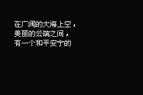

Sitafei De Chuanshuo (China) (Proto)
SRAM 256K Save Format Spec gbakit Built-In 💾 MultiBoot
Cartridge Identity
- Game Code
ASTC(FamilyAST)- Header Title
STAFY- Maker / Revision
FQ/ rev0- ROM Size
- 8.0 MiB (8,388,608 B)
- Save Media
SRAM 256K- SHA-256
3a097b1fdcb6d68802e623d73456f7a94b0f5436e5d492168699577b5e214382- Engine / SDK Group
comm-011(32 families)
Screenshots


Link Cable & Multiplayer Communications
This title contains detected communication capabilities: 💾 MultiBoot.
Detailed protocol specifications, SIO registers, Joybus commands, and MultiBoot sequences are documented in the Link & Multiplayer Reference.
- Single-Cart MultiBoot
- Single-Cartridge MultiBoot (Download Play) client/server handler · Thumb SWI 0x25 (
0xDF25):0x29dc78,0x29dc94,0x29dcb0,0x29dccc
Battery Save Format Specification
Open Full Save Format SpecDownload save-format.json
- Specification Coverage
- 4 mapped fields · 0 verified checksum(s) · Confidence: HIGH
- gbakit Built-In Support
- Built-in (ASTC)
gbakit save verify ASTC save.sav
gbakit save decode ASTC save.sav
gbakit save fix ASTC damaged.sav -o repaired.savObserved Battery Save Layout
- Fill Byte & Active Size
0xFFfill · 604–604 / 32,768 B active (entropy 0.19 bits/B)- Active Offset Ranges
0x0–0x7,0x10–0x43,0x48–0x13B,0x810–0x843,0x848–0x93B,0x1000–0x1003(6 total)- ASCII Magic / Headers
STAFY OK- Observed Variable Regions
- 0 bytes across 0 spans: None
- Candidate Checksum/Counter Spans
- None
Asset Map (formatkit.asset-map.v1)
Download ASTJ-r0-b606b80bd68edf8d.asset-map.json.gz (200,412 B (195.7 KiB)) Verified PASS · 30.49% coverage
| Metric | Bytes / Value | Entries |
|---|---|---|
| Identified | 1,375,421 B (1.31 MiB) (16.40%) | 1,902 |
| Mapped | 0 B (0.00%) | 0 |
| Opaque | 1,182,416 B (1.13 MiB) (14.10%) | 1 |
| Unknown | 5,830,771 B (5.56 MiB) (69.51%) | 1,686 |
| Total ROM Size | 8,388,608 B (8.00 MiB) | 3,589 |
| Coverage % | 30.49% | — |
| Entries w/ Code Refs | 1,970 / 3,589 (54.89%) | — |
Top Identified Formats: compress.bios-rle (209 · 724,105 B (707.1 KiB)) · compress.bios-lz77 (609 · 532,036 B (519.6 KiB)) · gfx.gba-palette (1,082 · 118,144 B (115.4 KiB)) · audio.m4a-song-table (1 · 944 B) · gba.rom-header (1 · 192 B)
Largest unknown Extents (Headerless / Custom Asset Candidates)
| Offset | Size | Shannon Entropy | Code Refs |
|---|---|---|---|
0x004F5C1D | 2,005,267 B (1.91 MiB) | 6.093 bits/B | 0 |
0x000880A8 | 294,708 B (287.8 KiB) | 7.482 bits/B | 0 |
0x001B0124 | 205,816 B (201.0 KiB) | 6.704 bits/B | 0 |
0x001E2B4C | 162,236 B (158.4 KiB) | 6.877 bits/B | 0 |
0x00131B40 | 137,516 B (134.3 KiB) | 6.109 bits/B | 0 |
gzip -dk ASTJ-r0-b606b80bd68edf8d.asset-map.json.gz && gbakit map verify rom.gba ASTJ-r0-b606b80bd68edf8d.asset-map.json
gbakit assets export rom.gba --asset-map ASTJ-r0-b606b80bd68edf8d.asset-map.json -o out/Text, Fonts & Scene Data
- Primary Text Encoding
- 16-bit / UTF-16LE text (
62ASCII strings ·5LZ77 ASCII blocks) - Font & VWF Indicators
- VWF Width Table 1bpp Font · BIOS SWIs: BitUnPack
0x10:2· LZ770x11/12:6· Huffman0x13:6· RLE0x14/15:8 - Scene & Packaging
100ROM pointer tables (≥32 entries,6≥200) ·0relativeu32TOCs ·290OAM metasprite hits
Hardware MMIO Subsystems
dma_transfer0x80000f4ppu_display0x80006e8,0x8003a88,0x8003af0save_bus_sram_flash0x8003e0c,0x8003e48
Regional Variants & Revisions (Family AST)
- Densetsu no Stafy (Japan) (
ASTJ, 8 MiB)